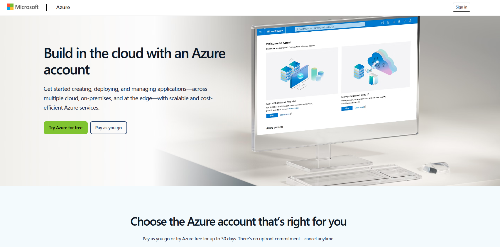

zakladamy konto i subskrypcję w Azure
Logujemy się na VM przez SSH
Przygotowujemy VM - NVIDIA
Przygotowujemy VM - DOCKER
Przygotowujemy VM - NVIDIA CONTAINER TOOLKIT
URUCHAMIAMY BIELIKA - KWANTYZACJA Q4
URUCHAMIAMY BIELIKA - KWANTYZACJA Q8
TUNEL SSH DO LOKALNEJ MASZYNY
TESTUJEMY API - NA LOKALNEJ MASZYNIE
ZABEZPIECZAMY API - API KEY Z DOCKER COMPOSE
URUCHAMIAMY DOCKER COMPOSE
TESTUJEMY API Z API KEY - NA LOKALNEJ MASZYNIE
ZARZĄDZAMY VM ZA POMOCĄ AZ CLI
USUWAMY INFRASTRUKTURĘ ZA POMOCA TERRAFORM